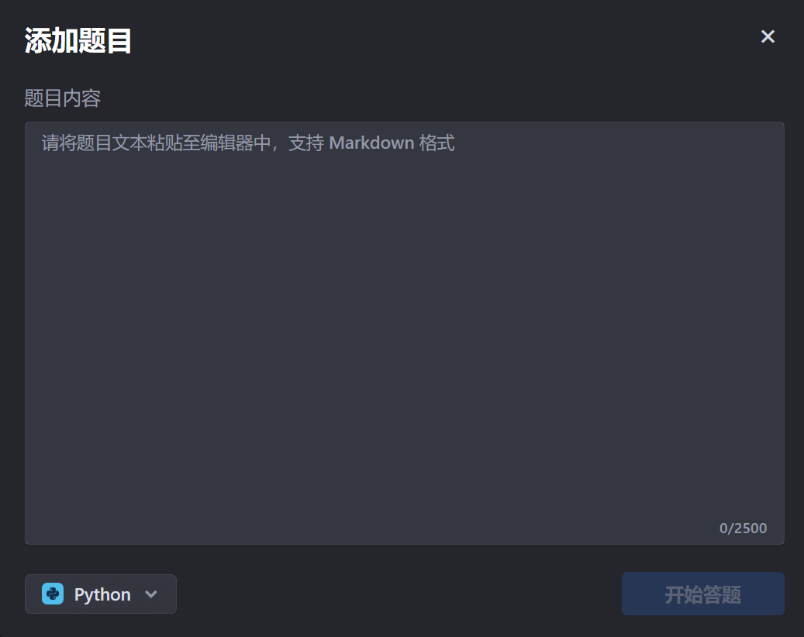
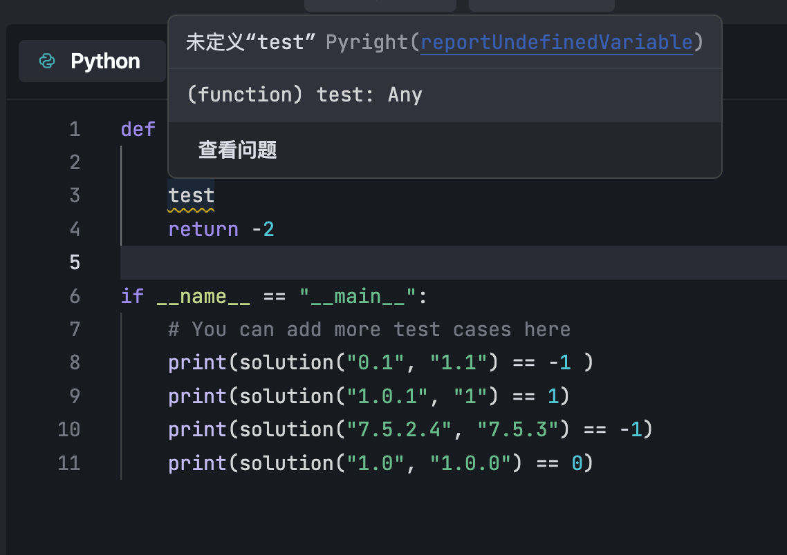

Práctica de código de algoritmos
Para mejorar el nivel de algoritmos, la práctica de programación es clave. En el pasado, los desarrolladores que aprendían código por su cuenta solían encontrar dificultades y era fácil que se vieran atrapados por procesos tediosos o pequeños errores. La sección [Práctica de código] de Doubao Marscode combina un editor de código con todas las funciones con capacidades de IA, ayudando a los desarrolladores a aprender algoritmos de manera eficiente con el asistente de práctica de IA.
Haz clic en el enlacehttps://marscode.cn/practice/EntrarDoubao Marscodepágina de práctica de código.
Los lenguajes compatibles son: Python, JavaScript, Go, C++, C, Java, Rust, TypeScript, etc.
Procedimiento
Primer paso: abrir problemas integrados / crear problemas personalizados
Doubao MarsCode (versión de práctica de código) incluye 100 problemas integrados, que son exámenes reales de años anteriores de las grandes empresas, divididos en tres niveles: fácil, medio y difícil. Puedes usar estos problemas para practicar tu capacidad de programación.


Si los problemas integrados no satisfacen tus necesidades, puedes crear tus propios problemas para practicar. Los pasos para crear un problema son los siguientes:
1. Haz clic en la barra de navegación superiorAgregar problemabotón.
En la página apareceAgregar problemaventana.

2. En elContenido del problemacuadro, ingresa tu problema.
3. En la lista de idiomas en la esquina inferior izquierda, selecciona el idioma de respuesta.
4. Haz clic enComenzar a responderbotón.
El contenido del problema se agrega aProblemaspanel.

5. (Opcional) Después de crear el problema, si necesitas modificar el título del problema, haz clic en el botón en la esquina superior derecha del área del problemaRenombrarpara modificarlo.
Segundo paso: resolver el problema
Después de abrir un problema integrado o agregar un problema personalizado, ingresa el código en el área de edición de código a la derecha del panel de problemas para resolverlo.
Antes de comenzar a responder, si necesitas cambiar el idioma de respuesta, haz clic en elCambiar idiomabotón y luego elige el nuevo idioma en la lista.
Durante el proceso de respuesta, si necesitas ayuda del asistente de IA, haz clic en el botón en la parte superior de la barra lateral derechaAIpara abrir el cuadro de chat del asistente de IA, y luego haz clic en los botones correspondientes para obtener sugerencias de ideas y código, o para que el asistente de IA revise el código que has ingresado.

Tercer paso: ejecutar el código
Después de completar la respuesta, haz clic en elEjecutarbotón para ejecutar tu código, y luego en el panel inferiorSalidaconsulta el resultado de la ejecución del código.

Gestionar problemas
Haz clic en la esquina superior izquierda de la página, en elAlternar barra lateral auxiliarbotón, o usaCtrl + Alt + Bla combinación de teclas de acceso rápido para abrir la lista de problemas, y luego cambia o elimina problemas en la lista.

Asistente de IA
El asistente de IA de MarsCode puede proporcionarte ideas para resolver o sugerencias de código, y también puede ayudarte a revisar el código.
|
|


Puedes preguntar en cualquier momento sobre los puntos de conocimiento que no tengas claros.
|
|


El asistente de práctica de IA también puede ayudarte a revisar el código actual y darte sugerencias de mejora.
|
|


También puedes consultar al asistente de práctica de IA en cualquier momento para otras preguntas relacionadas con la programación.
|
|
|


Un editor más cómodo
Doubao MarsCode ofrece un editor de código con todas las funciones, más completo y más acorde con los hábitos diarios de los desarrolladores, lo que hace que practicar sea más cómodo.
debug

Revisión de errores

Panel de terminal
TerminalEl panel muestra información relacionada con la ejecución del código, como el número de práctica cuando la ejecución es exitosa y el mensaje de error cuando falla. Cuando ocurre un error, puedes pasar el mouse sobre el error correspondiente y hacer clic en elAI Fixbotón para usar el asistente de IA y ayudar a corregir el error.

Además, puedes crear una nueva terminal, dividir la terminal e iniciar archivos de configuración.